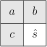

- With interlacing:
- Without interlacing:

where
| Prediction Context |
|  |
| Predictors | |
| Category | Huffman code | |||||||||||||||||||||||||||||||||||||||||||||||||||||||||||||||||||||||||||||||||||||||||
|
|
Para una imagen RGB, el algoritmo básico consiste en:
| Luminance | Chrominance | ||||||||||||||||||||||||||||||||||||||||||||||||||||||||||||||||||||||||||||||||||||||||||||||||||||||||||||||||||||||||||||||||||||||||||||||||||||||||||||||||||
|
|
| (1) |
where is the quantization matrix.
in order to (partially) sorter the coefficients attending to their magnitude. Notice that, after a given coefficient, the remainder ones are zero. This situation if encoded using the EOB (End Of Block) special symbol.
|
|
| div |
|
||||||||||||||||||||||||||||||||||||||||||||||||||||||||||||||||||||||||||||||||||||||||||||||||||||||||||||||||||||||||||||||||||||||||||||||||||||||||||||||||||
| 39 | -3 | 1 | 0 | 0 | 0 | 0 | 0 |
| 2 | -1 | 0 | 0 | 0 | 0 | 0 | 0 |
| 1 | 0 | 0 | 0 | 0 | 0 | 0 | 0 |
| 0 | -1 | 0 | 0 | 0 | 0 | 0 | 0 |
| 0 | 0 | 0 | 0 | 0 | 0 | 0 | 0 |
| 0 | 0 | 0 | 0 | 0 | 0 | 0 | 0 |
| 0 | 0 | 0 | 0 | 0 | 0 | 0 | 0 |
| 0 | 0 | 0 | 0 | 0 | 0 | 0 | 0 |
| 39 | -3 | 1 | 0 | 0 | 0 | 0 | 0 |
| 2 | -1 | 0 | 0 | 0 | 0 | 0 | 0 |
| 1 | 0 | 0 | 0 | 0 | 0 | 0 | 0 |
| 0 | -1 | 0 | 0 | 0 | 0 | 0 | 0 |
| 0 | 0 | 0 | 0 | 0 | 0 | 0 | 0 |
| 0 | 0 | 0 | 0 | 0 | 0 | 0 | 0 |
| 0 | 0 | 0 | 0 | 0 | 0 | 0 | 0 |
| 0 | 0 | 0 | 0 | 0 | 0 | 0 | 0 |
are visited using the zig-zag scan to tind the EOB. The result is
| 39 | -3 | 2 | 1 | -1 | 1 | 0 | 0 | 0 | 0 | 0 | -1 | EOB |
| JPEG AC codes (Luminance)
| ||
| Run/category | Longitud | Base code |
| 0/0 | 4 | 1010 (=EOB) |
| 0/1 | 3 | 00 |
| 0/2 | 4 | 01 |
| 0/3 | 6 | 100 |
| : | : | : |
| 15/10 | 26 | 1111 1111 1111 11110 |
and output the base code bits. In our example, we output .
The whole bit-stream for our example is:
| 100101 | 0100 | 0110 | 001 | 000 | 001 | 11110100 | 1010 |
Finally, the block is encoded using only bits. Therefore, the compression ratio is 15:1 approximately ( bits/pixel).
where the bpp (bit per pixel) is the result of compute the resulting bit-rate after compress and decompress the images using the command line tools cjpeg and djpeg.
[1] The Joint Photographic Experts Group (JPEG). Recommendation T.81: Digital Compression and Coding of Continuous-tone Still Images. International Telecommunication Union (ITU), September 1992.
[2] The Joint Photographic Experts Group (JPEG). FCD 14495, Lossless and Near-Lossless Coding of Continuous Tone Still Images (JPEG-LS). The International Standards Organization (ISO)/The International Telegraph and Telephone Consultative Committee (CCITT), July 1997.
[3] G. K. Wallace. The JPEG Still Picture Compression Standard. Communications of the ACM, 34(4):30 – 44, April 1991. Se puede conseguir en ftp://ftp.uu.net/graphics/jpeg/wallace.ps.Z.